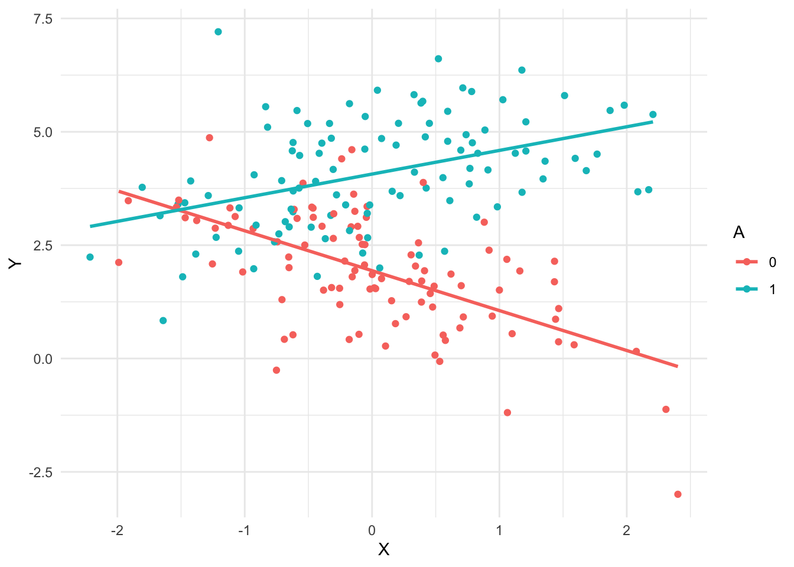

generate_data <- function(beta0 = 0,
betaX = 0,
betaA = 0,
betaXA = 0,
n = 200,
proportion = 1/2) {
X <- rnorm(n)
A <- rbinom(n, 1, proportion)
Y <- beta0 + betaX * X + betaA * A + betaXA * X * A + rnorm(n, sd = 1)
data.frame(Y = Y, X = X, A = factor(A))
}Ethics4DS: Coursework 1
Reproducibility
Change parameters of the simulation as necessary (or as desired, to make it unique)
Here is a visualisation to help understand the data
one_sample <- generate_data(beta0 = 2, betaX = -1, betaA = 2, betaXA = 1.5)
one_sample |>
ggplot(aes(X, Y, color = A)) +
geom_point() +
geom_smooth(method = "lm", se = FALSE)`geom_smooth()` using formula = 'y ~ x'
one_fit <- lm(Y ~ X + A + X * A, one_sample)
summary(one_fit)
Call:
lm(formula = Y ~ X + A + X * A, data = one_sample)
Residuals:
Min 1Q Median 3Q Max
-2.8553 -0.6802 -0.0024 0.6824 3.7687
Coefficients:
Estimate Std. Error t value Pr(>|t|)
(Intercept) 1.9373 0.1103 17.560 < 2e-16 ***
X -0.8801 0.1258 -6.994 4.1e-11 ***
A1 2.1303 0.1538 13.851 < 2e-16 ***
X:A1 1.4017 0.1672 8.381 1.0e-14 ***
---
Signif. codes: 0 '***' 0.001 '**' 0.01 '*' 0.05 '.' 0.1 ' ' 1
Residual standard error: 1.086 on 196 degrees of freedom
Multiple R-squared: 0.5808, Adjusted R-squared: 0.5744
F-statistic: 90.53 on 3 and 196 DF, p-value: < 2.2e-16summary(one_fit)$coefficients[,4] (Intercept) X A1 X:A1
4.291280e-42 4.101667e-11 7.199416e-31 1.004225e-14 # p-values for all the non-intercept variables
summary(one_fit)$coefficients[-1,4] X A1 X:A1
4.101667e-11 7.199416e-31 1.004225e-14 # p-value for second coeff
summary(one_fit)$coefficients[2,4][1] 4.101667e-11# Every time this function is called, it:
# (1) generates new data
# (2) fits a model using the formula Y ~ X + A + X * A
# (3) returns the p-value for the second coefficient
one_experiment <- function(beta0 = 0, betaX = 0, betaA = 0,
betaXA = 0, n = 200, proportion = 1/2) {
one_sample <- generate_data(beta0, betaX, betaA, betaXA, n, proportion)
one_fit <- lm(Y ~ X + A + X * A, one_sample)
p_values <- summary(one_fit)$coefficients[2,4]
return(p_values)
}one_experiment()[1] 0.8266538one_experiment(betaX = .3)[1] 0.1502811n_experiments <- 5
replicate(n_experiments, one_experiment())[1] 0.9677839 0.5647648 0.1151294 0.2137763 0.7461851rejection_level <- 0.05
n_experiments <- 500
# proportion of experiments where p-value
# is below rejection level
mean(replicate(n_experiments, one_experiment()) < rejection_level)[1] 0.032Consider: What should this be? Is the above result acceptable or concerning?
mean(replicate(n_experiments, one_experiment(betaX = .2)) < rejection_level)[1] 0.474A larger proportion of experiments had significant p-values this time. Is that what we expect?
How would this rejection rate depend on each of the parameters input to the one_experiment() function (e.g. betaX, betaA, n, etc)?
When do we want the rejection rate to be high, and when do we want it to be low?
Note: it may be helpful to review basic conditional control flow in R from sources like one of the following
- https://posit.cloud/learn/primers/6.5
- https://adv-r.hadley.nz/control-flow.html Section 5.2
Instructions: after completing the rest of this notebook, delete this comment and all of the demonstration code above. You should only keep the code necessary for your answers below to work.
Preregistration vs p-hacking
p-hacking
- Modify the example code to create a function that simulates p-hacking
- Show the effect of p-hacking on statistical error rates using any appropriate statistics or visualisations that you prefer
- Explain, in your own words, what problems could result from p-hacking
Preregistration
- Create another version of the function to simulate the constraints of preregistration
- Compare the error rates with preregistration to those without, and explain whether this could help with any problems you identified above and, if so, how
Reproducibility and causality
Reproducible and causal
- Create another simulation, modifying the data generating code to be consistent with a specific causal model structure, and choosing the structure to satisfy the following the following requirements
- Show that there is a reproducible effect, i.e. one that can be found fairly consistently (e.g. in more than five percent of experiments) without using p-hacking
- Show, by simulating an intervention, that the above effect is causal
Reproducible but not causal
- Repeat the above section, but in this case choose the causal model generating your data so that the reproducible effect is not causal, i.e. an intervention on that variable does not change the outcome variable